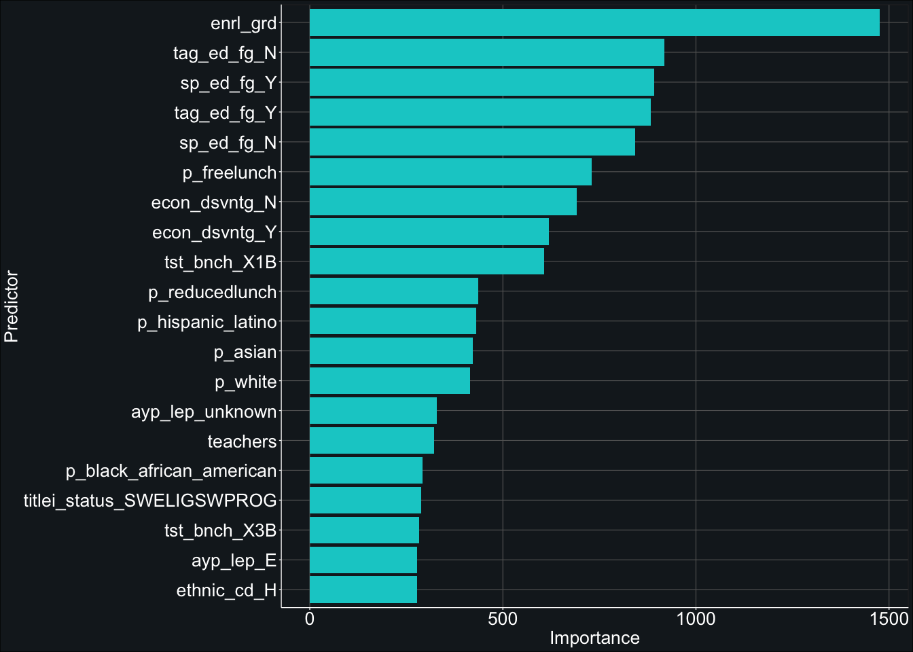
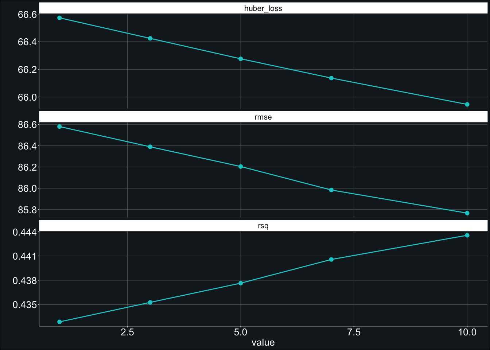
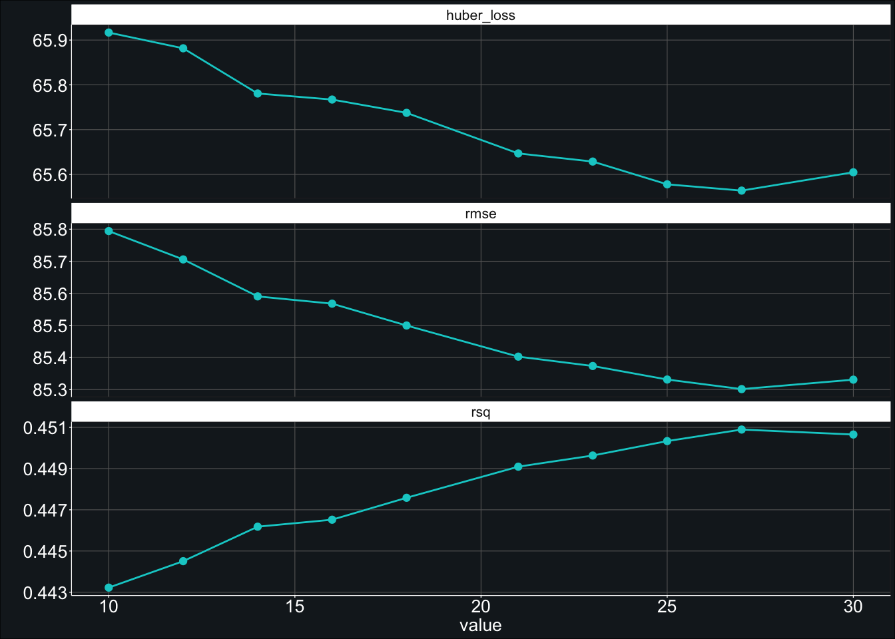

Here is how I created the model. It is all quite impressive.
model_rf <- rand_forest() %>%
set_mode("regression") %>%
set_engine(engine = "ranger",
num.threads = parallel::detectCores() - 2,
importance = "permutation",
verbose = TRUE) %>%
set_args(trees = 1000)Here is how I created the workflow. One cannot doubt my greatness.
# create workflow object
workflow_rf <- workflow() %>%
add_recipe(recipe_1) %>%
add_model(model_rf)I am the creator of worlds (or, at the very least, forests).
# start timer
tictoc::tic()
# fit model
fit_rf <- fit_resamples(
object = workflow_rf,
resamples = data_train_cv,
metrics = yardstick::metric_set(rmse, rsq, huber_loss),
control = control_resamples(verbose = TRUE,
save_pred = TRUE,
extract = function(x) extract_model(x)))
# end timer
time1 <- tictoc::toc()## 305.063 sec elapsedshow_best(fit_rf, metric = "rmse", n = 10) # 86.1…axis labels still somehow elude me.
pluck(fit_rf, ".extracts", 1, ".extracts", 1) %>%
vip(aesthetics = list(fill = "cyan3")) +
labs(x = "Predictor") +
theme_407()
model_rf_tune <- rand_forest() %>%
set_mode("regression") %>%
set_engine(engine = "ranger",
num.threads = parallel::detectCores() - 2,
importance = "permutation",
verbose = TRUE) %>%
set_args(trees = 500,
# mtry = tune(),
min_n = tune())workflow_rf_tune <- workflow_rf %>%
update_model(model_rf_tune)# extract number of predictors
num_preds <- sum(recipe_1$var_info$role == "predictor")
# create grid
grid_rf <- grid_regular(#mtry(range = c(2, num_preds)),
min_n(range = c(1, 10)),
levels = 5)# start timer
tictoc::tic()
# fit model
fit_rf_tune <- tune_grid(
object = workflow_rf_tune,
resamples = data_train_cv,
grid = grid_rf,
metrics = yardstick::metric_set(rmse, rsq, huber_loss),
control = control_resamples(verbose = TRUE,
save_pred = TRUE,
extract = function(x) extract_model(x)))
# end timer
time2 <- tictoc::toc()## 757.052 sec elapsedshow_best(fit_rf_tune, metric = "rmse", n = 10) # 85.8fit_rf_tune %>%
autoplot() +
geom_line(color = "cyan3") +
geom_point(color = "cyan3") +
theme_407()
# create grid
grid_rf_2 <- grid_regular(#mtry(range = c(10, 25)),
min_n(range = c(10, 20)),
levels = 5)# start timer
tictoc::tic()
# fit model
fit_rf_tune_2 <- tune_grid(
object = workflow_rf_tune,
resamples = data_train_cv,
grid = grid_rf_2,
metrics = yardstick::metric_set(rmse, rsq, huber_loss),
control = control_resamples(verbose = TRUE,
save_pred = TRUE,
extract = function(x) extract_model(x)))
# end timer
time3 <- tictoc::toc()## 644.524 sec elapsedshow_best(fit_rf_tune_2, metric = "rmse", n = 10) # top is 85.4fit_rf_tune_2 %>%
autoplot() +
geom_line(color = "cyan3") +
geom_point(color = "cyan3") +
theme_407()
workflow_rf_final <- finalize_workflow(
workflow_rf_tune,
select_best(fit_rf_tune_2, metric = "rmse")
)# start timer
tictoc::tic()
# produce final fit
fit_rf_final <- last_fit(workflow_rf_final, split = data_split)
# end timer
time4 <- tictoc::tic()collect_metrics(fit_rf_final) # 87.4